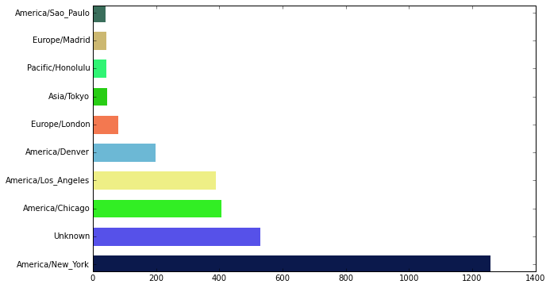

数据处理入门(pandas)
1 简介
1.1 前言
本文主要讨论了如何利用python来进行数据处理，具体是在熟悉 numpy模块 的基础上进一步讨论pandas模块，然后涉及到的作图部分请读者参看 matplotlib模块 一文。
1.2 感谢
感谢游静借给我的两千块钱提供的作业电脑支持。
1.3 引入惯例
import numpy as np
import pandas as pd
import matplotlib.pyplot as plt
from pandas import Series, DataFrame
2 第一个例子
该例子数据来自Python for data analysis 一书提供的材料。 点击 这里 也可以下载。
2.1 从collections模块出发
在统计学那篇文章讲过 statistics的众数函数和collection的Counter，这里我们就是利用collections模块的Counter类封装来进行统计计数功能。
首先我们这样开始，具体文件位置读者需要调试下。这里就是简单的将数据提取出来了。最后time_zones就是一个大型列表。里面有很多blabla的数据。
%matplotlib inline
import json
path = 'datas/usagov_bitly_data.txt'
records = [json.loads(line) for line in open(path)]
time_zones = [rec['tz'] for rec in records if 'tz' in rec]
大概是这样的：
'America/New_York', 'America/Denver', 'America/New_York', 'America/Sao_Paulo', 'America/New_York', 'America/New_York', 'Europe/Warsaw', '', '', '' ......
然后我们用python内置模块collections的Counter类来进行封装：
from collections import Counter
c = Counter(time_zones)
tz_counts = c.most_common(10)
tz_counts的输出如下所示：
[('America/New_York', 1251),
('', 521),
('America/Chicago', 400),
('America/Los_Angeles', 382),
('America/Denver', 191),
('Europe/London', 74),
('Asia/Tokyo', 37),
('Pacific/Honolulu', 36),
('Europe/Madrid', 35),
('America/Sao_Paulo', 33)]
然后我写了一个棒状图绘图的封装函数，这样可以简单如下就画出图形来了：
from wanze.plot import barplot
barplot(tz_counts,fillna='Unknown')
具体图片效果如下所示： 
这个barplot函数具体代码如下所示：
import matplotlib.pyplot as plt
import random
def randrgb():
'''Generate a random rgb color.'''
return (random.random(), random.random(), random.random())
def barplot(lst,fillna=''):
labels = []
counts = []
for i in lst:
label,count = i
labels.append(label)
counts.append(count)
def fillna_fun(x,a):
if x:
return x
else:
return a
labels = [fillna_fun(i,fillna) for i in labels]
plt.figure(figsize=(10,6))
plt.yticks(range(len(lst)),labels)
bar = plt.barh(range(len(lst)), counts,height = 0.5,align="center", linewidth = 5)
for i in range(len(lst)):
bar[i].set_color(randrgb())
return plt.show()
就是一些matplotlib棒状图绘图的细节问题，读者请参看我写的matplotlib模块一文理解之，这里就不赘述了。
2.2 pandas模块的解决方案
如果我们利用pandas模块，那么我们的解决方案就会变得更简洁实用了。具体就是用pandas模块的DataFrame类来封装数据，然后调用各个实用的方法。
读者可以运行下面的代码看一下DataFrame对象内部的数据结构情况，其有点类似于excel表格数据。
from pandas import DataFrame , Series
import pandas as pd
frame = DataFrame(records)
frame
DataFrame类接受列表或者numpy的nparray对象等，然后将其转换成为这样的表格形式。引用其内某一列属性使用这样的语法 frame['tz'] ；引用某几行的数据使用这样的语法 frame[:10] 。然后你可以混合使用来引用某几行某几列的数据 frame['tz'][10] 或者 frame[:10]['tz'] ，值得一提的是引用某一行不能采用这样的语法 frame[10] 。
如果我们使用type命令查看我们会发现某一列的数据是属于pandas的 Series 对象，理解这点很重要，后面谈到的很多方法都是Series对象的。
2.2.1 value_counts方法
value_counts方法有点类似于前面谈及的collections模块的Counter类的功能，不过注意这里只是Series对象自己的方法，而且它返回的也是Series对象。读者可以在ipython3 notebook下看一下这个tz_counts变量、
tz_counts = frame['tz'].value_counts()
2.2.2 fillna方法
fillna方法用于把Series对象里面没有值（和空字符值不同，其对应的是什么np.nan值）。fillna方法接受一个参数，从而将Series对象里面的nan值都替换为该值。
2.2.3 修改空字符串值
tz_counts[tz_counts == ''] = 'Unknown'
按照上面显示的语法就可以修改Series对象里面的空字符串为'Unknown'值，这种语法看起来好怪异，还不很理解。
现在这条线路所有代码汇总如下所示，其中records数据就是最前面讨论生成的那个数据。
from pandas import DataFrame , Series
import pandas as pd
frame = DataFrame(records)
tz_counts = frame['tz'].fillna('missing')
tz_counts[tz_counts == ''] = 'Unknown'
tz_counts = tz_counts.value_counts()
2.2.4 plot方法
pandas模块很方便的一个功能就是Series对象有一个plot方法，可以直接做出效果还行的棒状图出来。
tz_counts[:10].plot(kind='barh',rot=0)
3 pandas基础
4 附录
4.1 ipython3 notebook
Wes Mckinney认为python最好的作业环境就是ipython加上一个好的编辑器，我很是赞同，对于python这门短小灵活的语言来说，似乎大型IDE只会显得拘束。
如果你熟悉python语法的话，其实关于ipython并没有好多的了，其最大的优点就是好看好用，打开终端，输入 ipython3 notebook 然后看到那令人爱不释手的界面，其实不需要其他更多的理由了。ipython有很多有用的功能，下面只介绍我觉得真的非常有用需要了解的东西。
4.1.1 matplotlib的inline模式
加上这一句，matplotlib的图片都inline显示，这个真的很有用。
%matplotlib inline
4.1.2 运算耗时计算
%timeit func(50000) 1 loops, best of 3: 4.06 s per loop
4.1.3 引用当前目录
path = %pwd
对应的是shell的pwd命令，其输出传递给了path变量，这个有时会很方便。
4.2 参考资料
- Python for Data Analysis ，作者：Wes McKinney 。 该书所用到的一些材料在这里 http://github.com/pydata/pydata-book